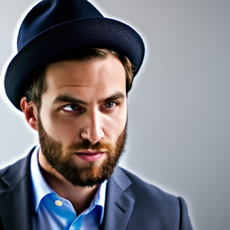
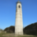
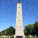

Background of the project:
In this part of the project, we are goinf to do a lot of fun things with the pre-trained diffusion model from DeepFloyd including denoising, inpainting, creating visual anagram and hybrid image.
Part 0. Setup
This part is just for us to see what results will the diffusion model return. We first need to follow the steps in the project spec to gain access to use the diffustion model. And then we use it to generate some image base on the prompt. Note that the prompt here are text embeding of a text instead of a real text. And we need to set a seed for this part and all the later parts of the project, I am using 180. Here are the rsults with different prompts and inference steps.
inference steps = 20:
an oil painting of a snowy mountain village:

a man wearing a hat:
a rocket ship:

inference steps = 10:
an oil painting of a snowy mountain village:

a man wearing a hat:
a rocket ship:
Part 1 - 1. Implementing the Forward Process
For this part, we are using the pre-trained denoiser of DeepFloyd. But first need to implement the forward pass so that we can add noise to the images. Typically, the clean image is \(x_0\) and \(x_T\) is pure noise. Which mean larger t has more noise, and for DeepFloyd models, T = 1000. So in this forward implementation, we need to add the noise to the image base on the t that is given. Which follows this formula: \(\sqrt{\bar{\alpha_t}} x_0 + \sqrt{1 - \bar{\alpha_t}} \epsilon\) where \(\epsilon\) ~ \(N (0, 1)\). Note that we did not just add the noise, but also scale the image. The \(\bar{\alpha}\) is called the alphas_cumprod variable. Which contains the \(\bar{\alpha_t}\) for \( t \in [0, 999] \). And we can get it by calling stage_1.scheduler.alphas_cumprod. Here are my results:
Original Image:

Images after adding noise:
t = 250

t = 500:

t = 750:

Observation: As you can see, the image is more noisy when t is higher.
Part 1 - 2. Classical Denoising
This part is farily simple, before we start to use the diffustion model for denoising, let's try the classical denoising method - Gaussian blur filtering. Here are my results:
Images Before Gaussian blur filtering:
t = 250
t = 500:
t = 750:
Images After Gaussian blur filtering:
t = 250
t = 500:

t = 750:
Observation: You can tell that the results is really bad, and that's why we need the diffusion model for the job.
Part 1 - 3. One-Step Denoising
In this part, we can finally start using the pre-trained diffusion model to do the denoising job. In this part, we are implementing one-step denosing. Which means that given a noisy image \(x_t\) and the timestep t, we predict the noise to directly obtain \(x_0\), which is the clean image. Note that since the model is trained with text conditionding, we also need to pass in a text prompt embedding, which we use "a high quality photo" here. Here are my results:
Images Before One-Step Denoising:
t = 250
t = 500:
t = 750:
Images After One-Step Denoising:
t = 250
t = 500:

t = 750:
Observation: As you can see, the predicted results of higher t (more noisy image) will be more depart from the original image.
Note: Since we add noise to the image using the formula: \(\sqrt{\bar{\alpha_t}} x_0 + \sqrt{1 - \bar{\alpha_t}} \epsilon\) where \(\epsilon\) ~ \(N (0, 1)\). When we obtain the denoised image using the perdiction of the noise, we need to derive tge formula to obtain \(x_0\).
Part 1 - 4. Iterative Denoising
Since diffusion models are designed to denoise iteratively. In this part, we are implementing iterative denoising. Which means that at every timestep, we denoise and obtain the image at previous timestep. like we can start with \(x_{1000}\), and get \(x_{999}\), and then \(x_{998}\), and keep continue until we get \(x_0\). But it will take a lot of time and computing poer if we run the diffusion model that many times. We can actually skip some steps. By using a strided_timesteps (an arrray of timesteps where strided_timesteps[0] is the largest t (990 in this case), and strided_timesteps[-1] is 0), we can predicted the image at strided_timesteps[i + 1] when we are at strided_timesteps[i]. For example, in this implementation, my stride is 30. Let's say I start at \(x_{990}\), I will then get \(x_{960}\), and then \(x_{930}\) until I get \(x_0\). Which save a lot of time and computing power but still works fine. For every iteration, we will need to perdict the image at previosu time using the following formula and constants:

where t is strided_timesteps[i], and t' is just strided_timesteps[i+1]. And the way to get \(x_0\) is the same as how we got the clean image in one-step denoising. Here are my results:
Iterative Denoising Images:
t = 690
t = 540:
t = 390:

Iterative Denoising Images:
t = 240

t = 90:
t = 0:
Result Comparison:
Iterative Denoising
One-Step Denoising:

Gaussian blur filtering
Observation: It is quite obvious that the iterative denoising method gives us the best result compare to one-step amd Gaussian blur.
Note: Note that the image timestep start at 690 here, it is because we start at strided_timesteps[10] (i_start = 10). This is because that we want to at least give model some information about the campenelle so that it can give us some results that still look like a campenelle.